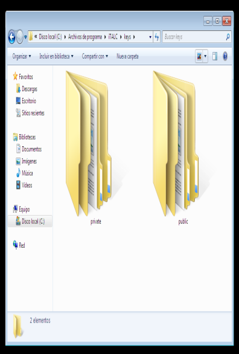
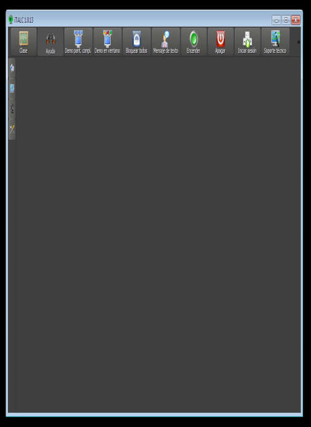
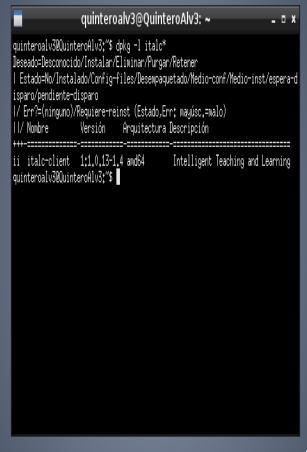
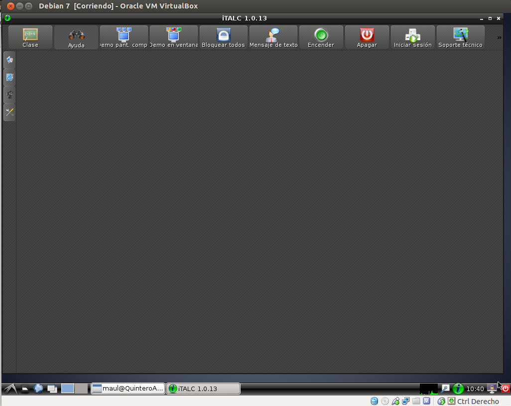
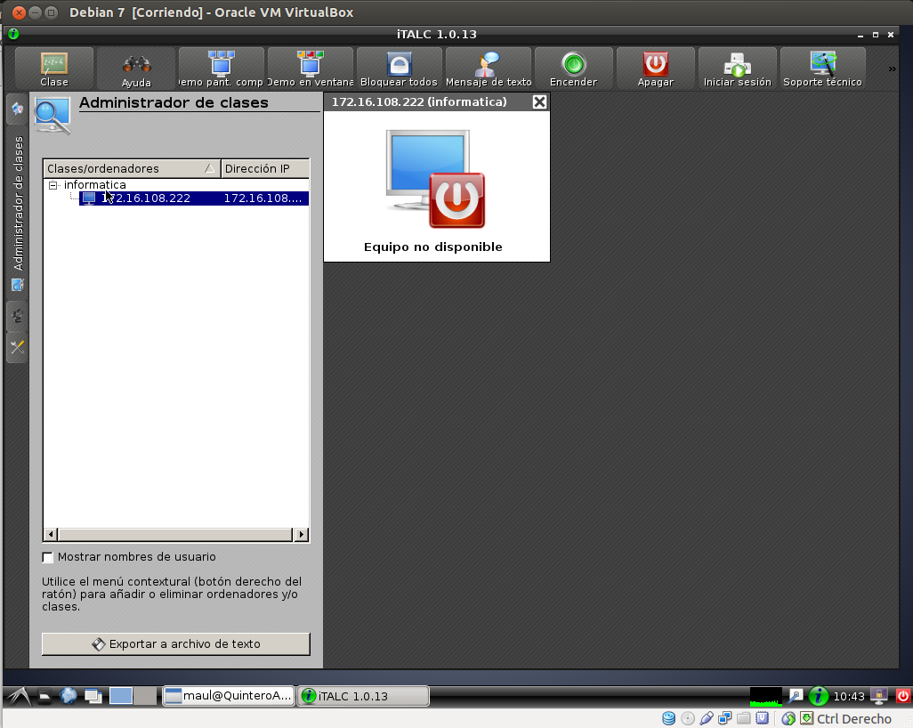
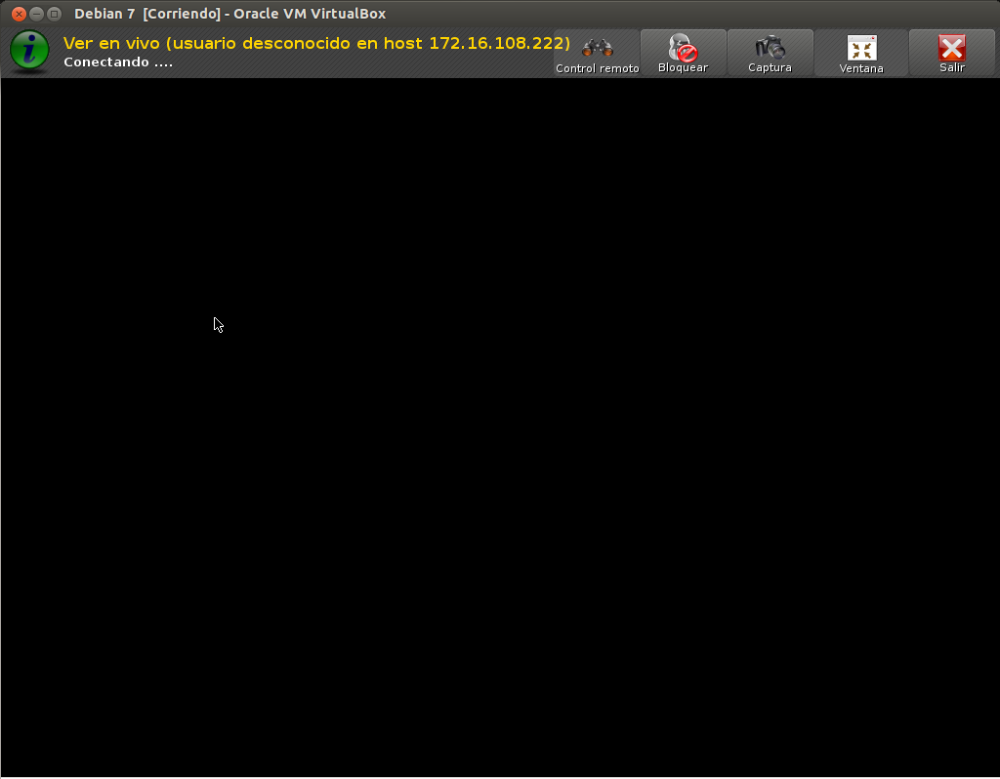

- Módulo: Fundamento de Hardware
- Título del trabajo Control Remoto
- Componentes del grupo: Gregorio Adrián QUintero Álvarez
- Fecha de entrega: 4 de Junio de 2014
- Curso Académico: 2013/2014
Para realizar esta práctica necesitaremos dos MV de Debian y una de Windows server 2008 para instalar el iTalc, además las máquinas deberan tener las Ip's estáticas. En estas máquinas vamos a instalar lo siguiente:
Vamos a instalar el iTacl Master en una de las máquinas de debian para ello es necesario crear los siguientes ficheros:
Para esta máquina tenemos que instalar el italc slave cuya versión tiene que ser la misma que la de debian las cual es italc 1.0.13. Después deberemos copiar las claves del Italc master, tanto la privada como la pública en windows y por último reiniciamos el programa.
En esta máquina virtual de GNU/Linux Debian vamos a instalar el iTalc Client y después copiaremos el fichero Key del master en el client. Después crearemos el grupo iTalc y añadimos nuestro usuario al grupo, también deberemos de darle permisos al grupo italc, para tener acceso a las claves de italc y verificaremos que el servicio está iniciado y lo estableceremos para que se inicie de forma automática como hicimos anteriormente.
Ahora desde el Master deberiamos poder monitorizar los usuarios slaves. Para ello debemos Iniciar el programa gráfico de control, para comprobar que está todo correctamente instalado y se pueden monitorizar remotamente. Primero buscar el icono en los menús del entorno gráfico y si no aparece el icono de iTalc usamos el comando italc.
  